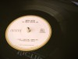

Síguenos en nuestras redes sociales para obtener información sobre los últimos exitos de la música


Síguenos en nuestras redes sociales para obtener información sobre los últimos exitos de la música
fue una banda estadounidense de rock alternativo, también algunas veces considerada dentro del movimiento del garage rock. Se formó en 1997 en Detroit (Míchigan) por la pareja compuesta por John Anthony Gillis bajo el nombre de Jack White (voz, guitarra, bajo, piano) y Meg White (batería, voz).12 Después de publicar sus primeras canciones y grabar dos álbumes de estudio, formaron parte del resurgimiento del garage rock de los años 60, caracterizado por su baja fidelidad de sonido y sus composiciones y arreglos simples inspirados principalmente por el punk rock, el blues rock, el folk rock3 y la música country.4 Su tercer y cuarto álbum White Blood Cells, Elephant de 2001 y 2003 respectivamente, los consagró en la escena musical internacional y llamó la atención de una gran variedad de medios de comunicación en los Estados Unidos y en Reino Unido con el sencillo «Seven Nation Army» que icónicamente se ha convertido en su mayor éxito.
Los elementos musicales y estílisticos de The White Stripes están conectados a tierra y raíces del punk rock y garage rock.103104105 En concreto, las influencias más importantes de la banda son los músicos de blues, Son House, Blind Willie McTell, Robert Johnson y las bandas de garage rock The Gories y The Sonics,106 También el sonido protopunk de Detroit de bandas como MC5 y The Stooges, además de grupos como The Cramps, Velvet Underground y los comienzos de la banda punk de Los Ángeles The Gun Club. Jack también ha declarado en numerosas ocasiones que el blues es la influencia dominante en sus composiciones y las raíces de la música de la banda, indicando que él cree que es tan sagrado que tocar no le hace justicia. Acerca de la música de The Gun Club en concetro, Jack White ha dicho: «Sex Beat», «'She's Like Heroin to Me» y «For the Love of Ivy»... ¿Por qué no enseñan estas canciones en las escuelas?».107 Bandas fuertes de blues rock como los The Rolling Stones y AC/DC también han influenciado a la banda, especialmente Led Zeppelin, ya que Jack ha afirmado: «No se puede confiar en nadie que no le guste Led Zeppelin.»108 La música tradicional del país como la de Hank Williams, Loretta Lynn, Rockabilly, Wanda Jackson y Gene Vincent, el surf rock de Dick Dale y la música popular de Lead Belly y Bob Dylan también han influido en el sonido de la banda.109 Meg White ha dicho que uno de sus músicos favoritos es Bob Dylan.110 Jack ha tocado en vivo con él y ha declarado: «Tengo tres padres, mi padre biológico, dios y Bob Dylan.»111 En su presentación en la película documental It Might Get Loud, Jack muestra su estilo minimalista y el ingenio mediante la construcción de una guitarra rudimentaria en un entorno campestre. La guitarra fue construida en un tablón de madera, dos clavos, una botella de coca-cola de vidrio, una cuerda de guitarra y una camioneta, terminando su actuación con su frase memorable: «¿Quíen dice que hay que comprarse una guitarra?».
Buscar artistas relacionados